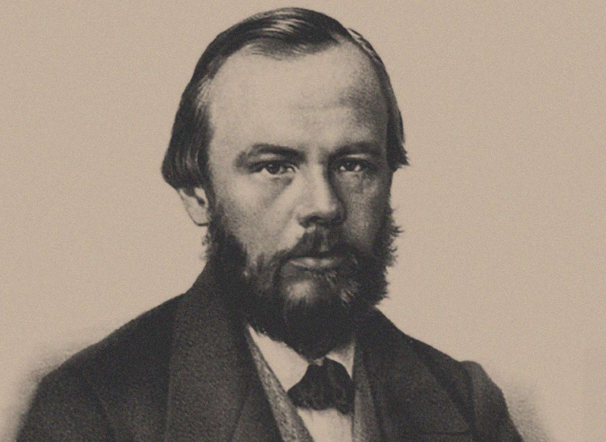
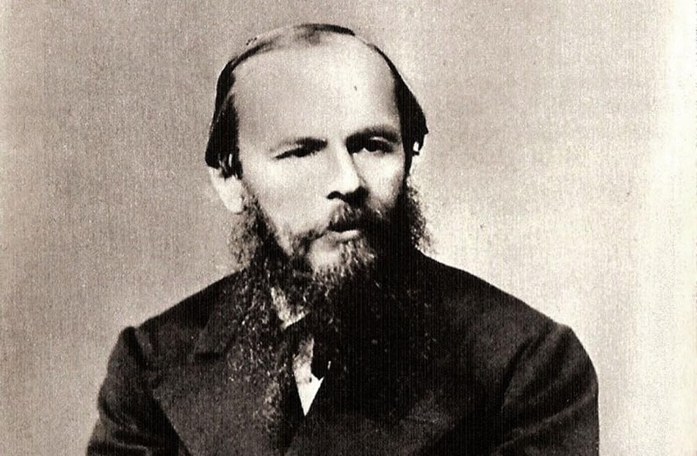

Gallery



Exploring the darkness, philosophy, and humanity inside one of history's greatest writers.

Fyodor Dostoevsky was a Russian novelist, philosopher, and journalist whose works explored psychology, morality, free will, suffering, and faith. His novels such as Crime and Punishment, The Brothers Karamazov, and Notes from Underground deeply influenced literature, philosophy, and existential thought.
His writing dives into the complexity of the human soul — examining guilt, redemption, isolation, and the struggle between reason and emotion.
“The mystery of human existence lies not in just staying alive, but in finding something to live for.”
— The Brothers Karamazov“To go wrong in one's own way is better than to go right in someone else's.”
— Crime and Punishment“Pain and suffering are always inevitable for a large intelligence and a deep heart.”
— Crime and Punishment“Man only likes to count his troubles; he doesn't calculate his happiness.”
— Notes from Underground